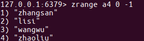

zset类型
- sorted set，有序集合
- 元素为string类型
- 元素具有唯⼀性，不重复
- 每个元素都会关联⼀个double类型的score，表示权重，通过权重将元素从⼩到⼤排序
- 说明：没有修改操作
增加
添加
zadd key score1 member1 score2 member2 ...
例1：向键'a4'的集合中添加元素'lisi'、'wangwu'、'zhaoliu'、'zhangsan'，权重分别为4、5、6、3
zadd a4 4 lisi 5 wangwu 6 zhaoliu 3 zhangsan
获取
- 返回指定范围内的元素
- start、stop为元素的下标索引
- 索引从左侧开始，第⼀个元素为0
索引可以是负数，表示从尾部开始计数，如-1表示最后⼀个元素
zrange key start stop
例2：获取键'a4'的集合中所有元素
zrange a4 0 -1

返回score值在min和max之间的成员
zrangebyscore key min max
例3：获取键'a4'的集合中权限值在5和6之间的成员
zrangebyscore a4 5 6

返回成员member的score值
zscore key member
例4：获取键'a4'的集合中元素'zhangsan'的权重
zscore a4 zhangsan

删除
删除指定元素
zrem key member1 member2 ...
例5：删除集合'a4'中元素'zhangsan'
zrem a4 zhangsan

删除权重在指定范围的元素
zremrangebyscore key min max
例6：删除集合'a4'中权限在5、6之间的元素
zremrangebyscore a4 5 6